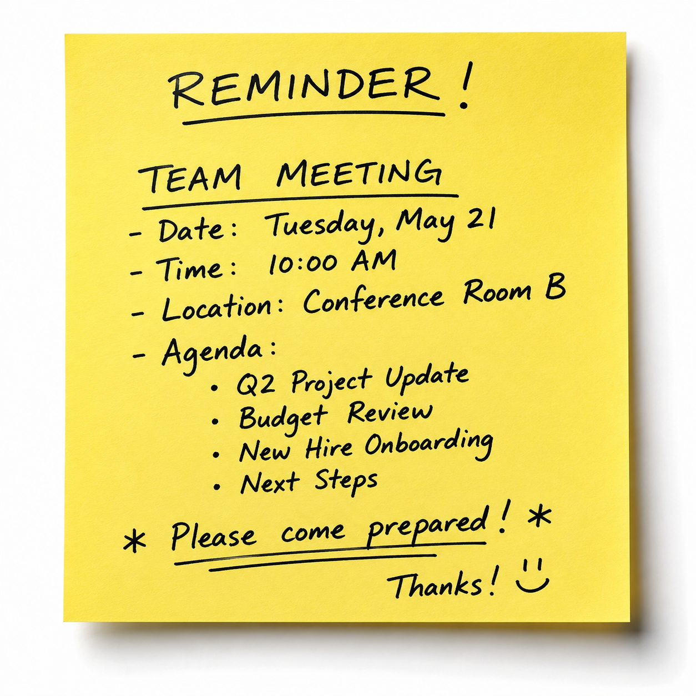
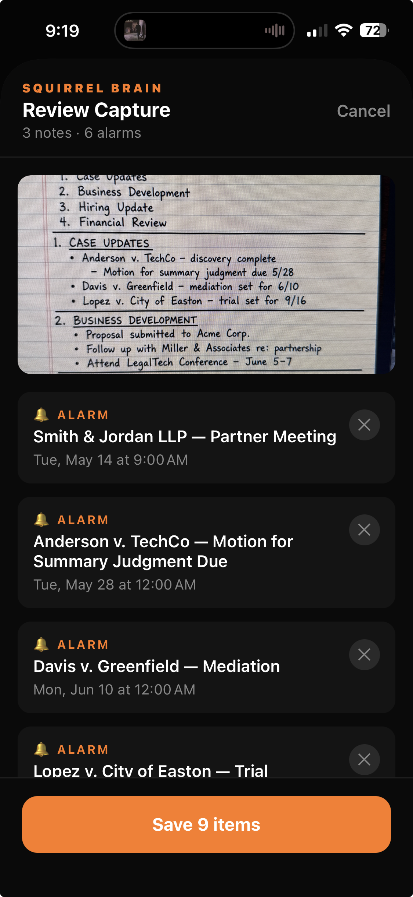
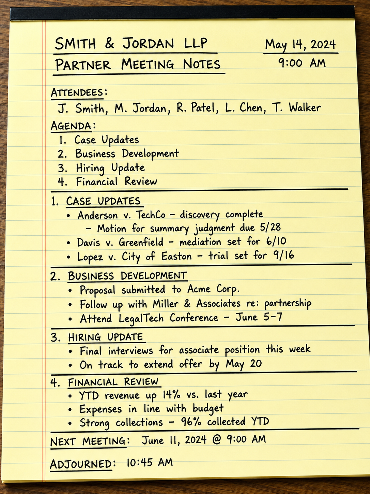

SQUIRREL BRAIN
Speak it. Snap it. Stash it.
Voice memo, photo, or screenshot — Squirrel Brain reads it, extracts every task and date, and turns it into alarms, notes, and calendar events. Automatically.
Download on the App StoreSpeak it. Snap it. Stash it.
Voice memo, photo, or screenshot — Squirrel Brain reads it, extracts every task and date, and turns it into alarms, notes, and calendar events. Automatically.
Download on the App StoreSoccer schedules. Doctor appointments. Work follow-ups. Ideas. Random screenshots. Things your spouse texted you three days ago.
Tap any tab to see what Squirrel Brain does with it.
Just say it out loud. "Remind me to call legal." "Need to send pricing tomorrow." "Pick up cleats after school."
You don't need complete sentences. You don't need to think first. Just talk.
Squirrel Brain turns chaos into organized action.

Soccer schedules. School events. Travel itineraries. Work schedules.
Screenshot it once. Squirrel Brain reads every date, time, address, and location — then builds your calendar automatically.
Every game, every event, every deadline. All at once.

Wine you loved. A whiteboard. A sticky note. A business card.
Take a picture and Squirrel Brain turns it into searchable notes you can actually find later.
No more scrolling through thousands of random photos trying to remember where something was.


Most reminder apps are too easy to ignore. Squirrel Brain was built for real life: busy parents, busy professionals, busy minds.
Reminders that stay with you until you deal with them.

Real example
Adam photographed his legal-pad meeting notes. This is what happened next.

Inside the app
Capture anything. Review before it saves. Every task, alarm, and calendar event — in one place.


Get the app
A smarter place to stash everything you meant to remember.